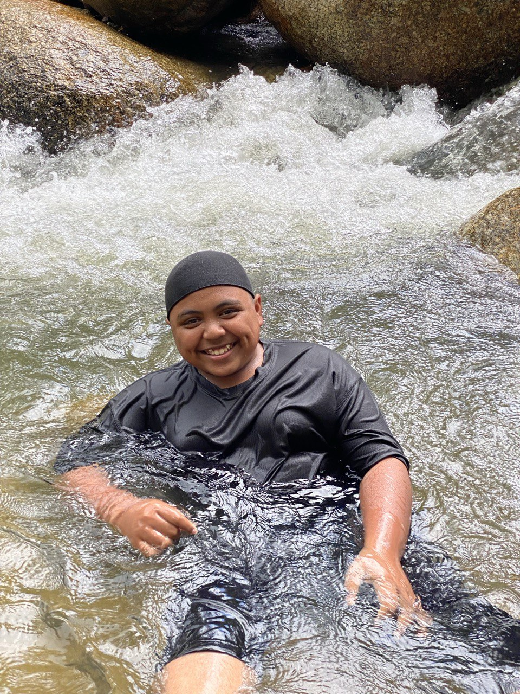
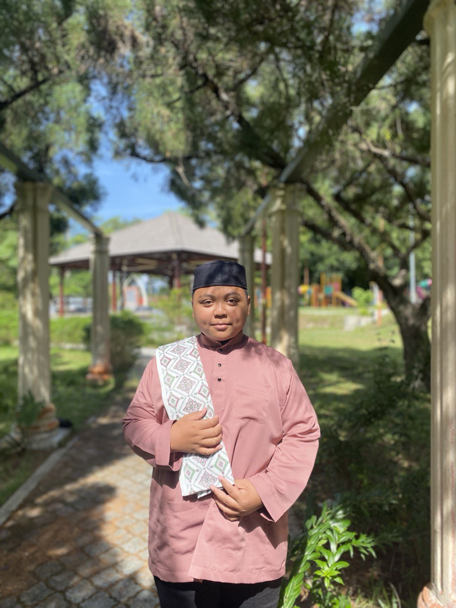
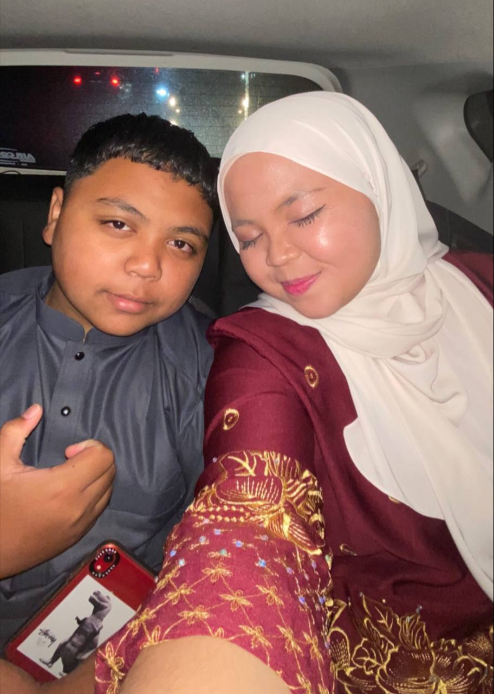

|

|

|
Pipal ˶ᵔ ᵕ ᵔ˶
My younger brother, Iqfal, is a true gem in our family. At 14 years old, he studies diligently at Sekolah Tahfiz in Gerik, where he has blossomed into a kind and responsible young man. He is the embodiment of kindness, never refusing a request from our parents or anyone else. Though introverted and often unsure of himself, his heart overflows with compassion and generosity.
He shares a special bond with me, often seeking my company for badminton games and laughter. He confides in us, sharing his secrets and enjoying a cup of tea together. His loyalty to his best friend is admirable, forming a strong bond that has weathered the test of time.
Iqfal may not be the most outspoken, but his actions speak volumes. His willingness to help, his unwavering kindness, and his genuine affection make him a joy to be around. He is a constant source of support, a pillar of strength for our family, and a true friend. Even though he is studying far away in Gerik, his presence is always felt at home. We are all incredibly proud of the young man he has become, and we cannot wait to see what the future holds for him. I believe that Iqfal has the potential to achieve great things. His kindness, generosity, and intelligence are just a few of the qualities that will help him succeed in life. I am excited to see what he accomplishes and to continue to be a part of his journey.